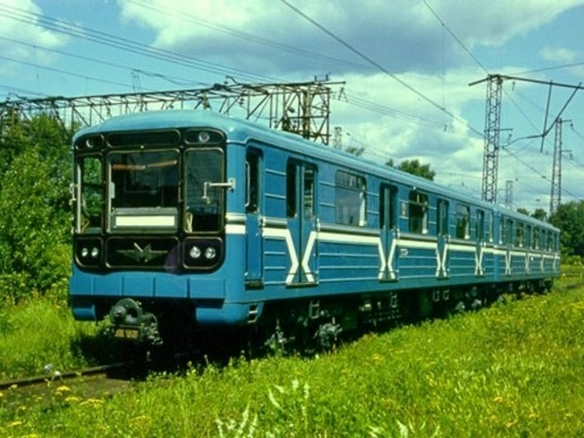
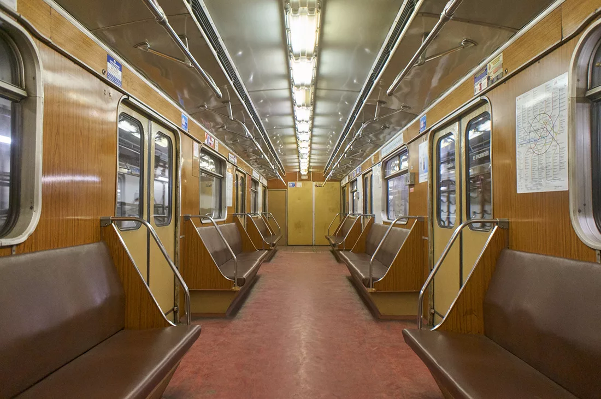
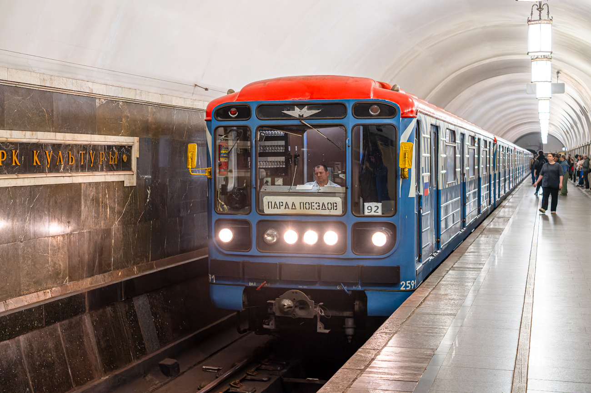
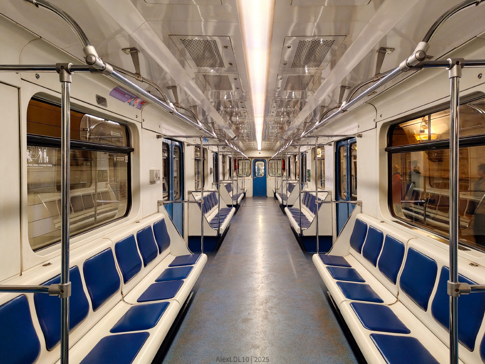

Парадный 81-717
На парадах поездов Московского метрополитена выступает неоригинальный состав. Хотелось бы, чтобы на парад выходил полностью оригинальный состав. Рассмотрим историю этих вагонов и то, как мог бы выглядеть идеальный «ретро-номерной».
Текущий состав на Параде поездов
На Параде поездов на Кольцевой линии 17–18 мая 2025 года выступал следующий состав:
2591 — 1548 — 1059 — 1453 — 1503 — 0918 — 2564
7 вагонов
| Параметр | Значение |
|---|---|
| Модель | 81-717.5М (МВМ) |
| Построен | 12.1996 |
| Депо | ТЧ-19 «Лихоборы» |
| Начало работы | 08.2020 |
| Текущее состояние | Эксплуатируется |
| Назначение | Пассажирский |
| Участие в парадах | 2023–2024 — Парад на БКЛ, с 2025 — Парад на Кольцевой линии |
История: май 1997 — поступил в депо приписки ТЧ-13 «Черкизово»; март 2017 — капитальный ремонт / ОЭВРЗ; 2023–2024 — участвовал в Параде поездов на Большой кольцевой линии; с 2025 — участвует в Параде поездов на Кольцевой линии.
🎨 Экстерьер
- 12.1996 — 03.2017: бирюзового цвета с белыми полосами по борту
- С 03.2017: бренд-окрас «Московский транспорт»
- Три ребра жёсткости
- Расположение сигнальных ламп: вертикальное
🪑 Интерьер
- Вертикальные поручни
- Сиденья: 12.1996 — 03.2017: диваны, обшитые кожзаменителем; с 03.2017: антивандальные сиденья синего цвета с ортопедической спинкой
- Пластик: 12.1996 — 03.2017: жёлтого цвета под дерево; с 03.2017: пластиковые композитные модели
- Освещение: 12.1996 — 03.2017: лампы типа ЛПВ-02; с 03.2017: светодиодная световая линия
Исторический образ — каким мог бы быть парадный состав
Если бы на парад выходил полностью оригинальный состав, он мог бы выглядеть так. Ниже — детали образа, собранные из сохранившихся вагонов.
🎨 Внешний вид (желаемый образ)
Окрас
Бирюзового цвета с двумя белыми полосами по борту.
Герб СССР
На борту — герб СССР (оригинальное оформление ранних номерных).
Рёбра жёсткости
Два ребра жёсткости (как на ранних номерных, а не три).
Фары
Компоновка фар 2-2 (оригинальная схема).
🪑 Интерьер (желаемый образ)
Поручни
Поручни старого образца
Диваны
Диваны, обшитые кожзаменителем — изначальный вариант.
Освещение
Лампы типа ЛПВ-02 — оригинальное люминесцентное освещение.
Пластик
Пластик рыжий под дерево — классический цвет салона.

📸 Владимир Заболотский(?)

📸 MetroSim
Нажмите на фото для увеличения
Фотогалерея

📸 Romach

📸 pigeon77
Нажмите на фото для увеличения
«Парадный 81-717 — это возможность показать историю номерных вагонов в оригинальном виде. Пока на парадах выступает неоригинальный состав, но у энтузиастов есть идея собрать полностью аутентичный поезд».